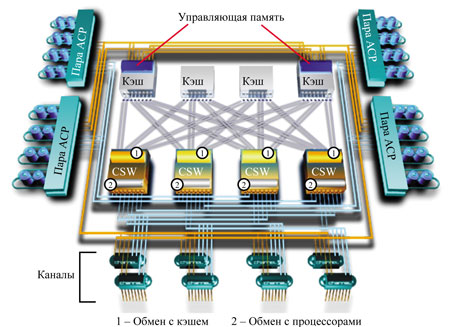
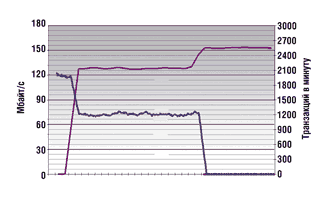
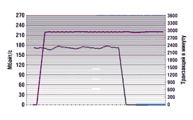
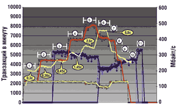
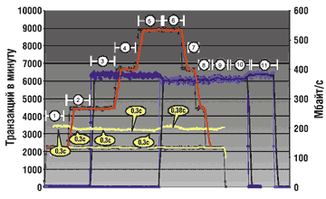

Павел Карнаух,
директор центра технической поддержки компании S&T International
pavel.karnaukh@snt.com.ru
Весной 2002 года на выставке NetWorld+Interop компания Hitachi Data Systems (HDS, http://www.hds.com) сделала три объявления. Первые два касались инициативы Hitachi TrueNorth - создания нового поколения средств управления системами хранения на базе ПО HiCommand, третье анонсировало выход новой серии интеллектуальных систем хранения данных Hitachi Lightning 9900V.
Большинство аналитиков одобрили намерение компании развивать средства управления на базе стандартов, разработанных ассоциацией Storage Networking Industry Association (SNIA). В основе стратегии Hitachi Data Systems лежит использование объектно-ориентированной модели Common Information Model (CIM) и протокола Simple Object Access Protocol (SOAP), позволяющих достичь высокого уровня совместимости с продуктами независимых разработчиков средств управления.
Неявным результатом анонсирования инициативы TrueNorth стало некоторое изменение имиджа HDS. Компания, ранее воспринимавшаяся в основном как поставщик высокопроизводительных и надежных систем хранения, заявила о своих претензиях на лидерство в области автоматизации корпоративных сетей хранения данных (SAN Automation).
Сравнение подходов Hitachi Data Systems и других компаний к решению этого вопроса, безусловно, требует детального анализа. Однако в данной статье я бы хотел остановиться на "аппаратной" части анонса, сделанного HDS. С выходом новой линейки Lightning 9900V сложилась достаточно редкая для компьютерной отрасли ситуация, когда одна компания технологически опережает своих конкурентов на два поколения.
Состав серии Lightning 9900V
Системы хранения Lightning 9900V поставляются в двух модификациях (табл. 1). Модель 9980 - многостоечная система с 32 интерфейсами Fibre Channel, FICON или ESCON и возможностью наращивания памяти до 74,7 Тбайт, а кэша - до 64 Гбайт. Модель 9970 - одностоечная система с масштабируемостью до 9,3 Тбайт, кэшем 16 Гбайт и 24 интерфейсами Fibre Channel, FICON или ESCON. В отличие от 9980 более простая система 9970 ориентирована на корпоративных пользователей, у которых объемы данных относительно невелики.
Таблица 1. Характеристики моделей Hitachi Lightning 9980 и 9970
| Основные характеристики | Lightning 9980 | Lightning 9970 |
| Макс. полоса пропускания, Гбайт/с | 15,9 | 7,9 |
| Макс. объем кэша, Гбайт | До 64 | До 32 |
| Макс. объем управляющей памяти, Гбайт | До 3 | До 3 |
| Дисковая емкость | ||
| Макс. "сырая" емкость, Тбайт | 74,7 | 9,3 |
| Максимальная емкость для RAID-5, Тбайт | ||
| Open Systems S/390-compatible |
64,3 61,1 |
6,8 6,4 |
| Максимальная емкость для RAID-1+, Тбайт | ||
| Open Systems S/390-compatible |
37,0 34,6 |
4,5 4,2 |
| Поддерживаемые диски | 36 Гбайт (15 000 об./мин), 73 Гбайт (10 000 об./мин) | |
| Диски "горячего" резерва | До 16 | До 4 |
| Интерфейсы ввода-вывода | ||
| Общее количество | До 32 | До 24 |
| Fibre Channel (1 или 2 Гбит/с) ESCON FICON |
До 32 До 32 До 32 |
До 24 До 24 До 24 |
| Поддерживаемые платформы | ||
| HP-UX, Sun Solaris, Microsoft Windows NT/2000, Novell NetWare, Linux, Compaq Tru64 UNIX, IBM AIX, Sequent DYNIX/ptx, SGI IRIX, OpenVMS, OS/390, MVS/ESA, MVS/XA, TPF/MPLF, VM/ESA, VM/XA, VM/HPO, VSE/ESA, VSE/SP | ||
Модели 9970 и 9980 серии 9900V по назначению соответствуют моделям 9910 и 9960 продуктовой линейки предыдущего поколения. Дисковые массивы 9960/9980 предназначены для построения хранилищ данных большого объема, при создании которых максимальное внимание уделяется вопросам производительности, отказоустойчивости и масштабируемости. Системы 9910/9970 функционально и архитектурно аналогичны "старшим" моделям и, как правило, используются в организациях, предъявляющих высокие требования к надежности и производительности систем хранения, но не обрабатывающих большие объемы данных.
В дальнейшем при обсуждении характеристик систем хранения серий 9900 и 9900V будут иметься в виду соответственно модели 9960 и 9980.
Традиционная архитектура систем хранения данных масштаба предприятия
Традиционная архитектура high-end-систем хранения данных, примером которых могут служить Hitachi Freedom 7700е или EMC Symmetrix 8000, достаточно проста. Обмен данными с серверами осуществляется через подсистему ввода-вывода. Для обмена данными с мэйнфреймами используются интерфейсы ESCON и FICON, для подключения "открытых" систем - Fibre Channel (1 или 2 Гбит/с), возможна поддержка SCSI. Запросы от серверов поступают на интерфейсные процессоры системы хранения (в терминологии HDS - Client-Host Interface Processor, CHIP), которые при чтении определяют наличие (cache hit) или отсутствие (cache miss) запрашиваемых данных в кэш-памяти, а при записи просто помещают данные в кэш.
После этого происходит подкачка данных с дисков в кэш или, наоборот, сброс данных на диск. Обмен данными между дисками и кэш-памятью контролируется соответствующими процессорами (в терминологии HDS - Array Control Processor, ACP) вместе с дисками, образующими дисковую подсистему. Важно отметить, что для оптимизации операций чтения и записи все пользовательские данные проходят через кэш.
В традиционных системах хранения информация передается по шине. Как правило, шин в системе несколько - от двух до четырех, и их суммарная пропускная способность не превышает 1,5 Гбайт/с. Полезная пропускная способность относительно невелика, так как по шинам передаются не только пользовательские, но и управляющие данные.
Архитектура Lightning 9900
Система Hitachi Freedom Storage Lightning 9900, анонсированная в июне 2000 г., была первым продуктом, построенным на основе коммутируемой архитектуры, и до выхода серии 9900V оставалась самой мощной корпоративной системой хранения данных в мире.
Внутренняя архитектура, используемая в Lightning 9900, ориентирована на поддержку "тяжелых" приложений с интенсивным вводом-выводом, выполняющихся как на "открытых" системах, так и на мэйнфреймах. В ее основе лежит коммутируемая сеть Hi-Star (Hierarchical Star Network), обеспечивающая множественные избыточные неблокируемые каналы передачи данных между подсистемой ввода-вывода, кэш-памятью и дисковой подсистемой. Внутренняя пропускная способность Lightning 9900 может достигать 6,4 Гбайт/с: из них 3,2 Гбайт/с приходятся на передачу данных и еще 3,2 Гбайт/с - на передачу управляющей информации.
Усовершенствования в 9900V
По сравнению с системами хранения данных предыдущего поколения пропускная способность систем Lightning 9900V увеличена более чем в 2,5 раза. Агрегированная пропускная способность систем хранения Lightning 9900V составляет 15,9 Гбайт/с (10,6 Гбайт/с для передачи данных и 5,3 Гбайт/с для передачи управляющей информации). Разумеется, такая скорость достигается только в полной конфигурации системы, с использованием всех четырех пар дисковых адаптеров ACP и четырех пар интерфейсных процессоров CHIP. Это означает, что при конфигурировании системы можно выбирать между наиболее производительным и наиболее эффективным по стоимости вариантами. Внутренняя пропускная способность увеличивается с добавлением каждого нового модуля ввода-вывода или дисковой подсистемы.
Архитектура Hi-Star II
Отметим, что каждая система Lightning 9900V - это фактически двухузловой кластер, хотя и не кластер в традиционном смысле этого слова. В данном случае важно, что все активные компоненты дискового массива - карты ввода-вывода, дисковые контроллеры, модули кэш-памяти - физически продублированы. Например, восьмипортовый модуль Fibre Channel представляет собой две четырехпортовые карты, которые устанавливаются в разные слоты системы; дисковые контроллеры ACP также устанавливаются только попарно и т. д. Все компоненты объединены высокоскоростной коммутируемой сетью Hi-Star II и представляют собой единое целое.
Архитектура Hi-Star II (рис. 1), используемая в системах Lightning 9900V, в основном идентична архитектуре Hi-Star систем серии 9900, появились лишь два серьезных отличия: количеств каналов обмена данными удвоилось, а их тактовая частота увеличилась. Hi-Star II состоит из двух коммутируемых сетей - Cache-HSN и Control Memory-HSN.
|  |
| Рис. 1. Архитектура HDS Lightning 9900V.
|
Cache-Hierarchical Star Network
Сеть Cache-HSN (C-HSN) используется для обмена данными между процессорами ACP/CHIP и кэш-памятью. Она состоит из четырех кэш-коммутаторов (CSW), образующих единую коммутирующую матрицу. CSW выполняют функции мультиплексирования, арбитража каналов и коммутации.
Каждый CSW обеспечивает мультиплексирование между восемью каналами обмена данными с кэшем и восемью каналами обмена с процессорами. В результате коммутирующая матрица состоит из 16 каналов к ACP, 16 каналов к CHIP и 32 каналов к модулям кэша, работающих на скорости 332 Мбайт/с (16 бит + 2 бита четности при частоте 166 МГц). Таким образом, максимальная суммарная пропускная способность C-HSN равна 10,6 Гбайт/с, и одновременно могут выполняться 32 операции ввода-вывода (таково общее количество каналов между кэш-коммутаторами CSW и портами модулей кэш-памяти).
Control Memory-Hierarchical Star Network
Сеть Control Memory-HSN (CM-HSN) обеспечивает обмен контрольной информацией между процессорами и управляющей памятью (control memory). Управляющая память содержит системные метаданные - информацию о состоянии кэша, содержащихся в нем данных, конфигурации системы и т. п. - и состоит из двух областей, зеркально копирующих друг друга. Таким образом, системные данные полностью отделены от пользовательских; при их обработке используются как раздельные сети, так и отдельные области памяти.
Сеть CM-HSN намного проще, чем Cache-HSN. Она не использует коммутаторов и состоит из множественных каналов "точка-точка", соединяющих процессоры и управляющую память. Каждый процессор (ACP или CHIP) соединен двумя 4-битными каналами с каждой из областей управляющей памяти, т. е. суммарно к управляющей памяти ведет 32 комбинированных 8-битных (+ 1 бит четности) канала общей пропускной способностью 5,3 Гбайт/с.
Такая, на первый взгляд несколько странная, топология сети облегчает работу с зеркальными копиями управляющей памяти.
Кэш и управляющая память
Сеть Cache-HSN позволяет одновременно выполнять множество высокоскоростных операций обмена данными с кэшем, а значит, при увеличении размера кэш-памяти увеличивается и количество пользовательских запросов, которые можно обслужить одновременно.
Система Lightning 9900V поддерживает до 64 Гбайт кэша данных (ожидается, что к концу 2002 г. будет объявлена поддержка 128 Гбайт), распределенных по четырем модулям, перекрестно соединенным с процессорами дисковой подсистемы и подсистемы ввода-вывода. При выполнении операции записи данные дублируются и записываются в различные модули кэша, где и находятся до непосредственной записи на диск.
Используемые системой интеллектуальные алгоритмы кэширования значительно увеличивают общую производительность. При произвольном доступе к данным проводится постоянный мониторинг доступа, динамически изменяются критерии "подкачки" данных, с тем чтобы максимально повысить процент попаданий в кэш. При обнаружении последовательного характера доступа используется алгоритм read ahead and delete beyond, обеспечивающий быстрое считывание данных и эффективное освобождение кэша для других запросов.
Кэш-память используется для оптимизации доступа как к пользовательским данным, так и к управляющей информации, например, таблицам адресации. Это особенно важно для так называемых cache-centric (требующих буферизации) систем с глобальным кэшем, обеспечивающих связь "каждый-с-каждым" между портами дисковой подсистемы и подсистемы ввода-вывода. Дополнительно к 64 Гбайт кэша данных Lightning 9900V содержит набор резервированных кэш-модулей (до 3 Гбайт), содержащих управляющие данные. Заметим: в системах других производителей для хранения пользовательской и управляющей информации обычно используется единый кэш. В таких системах управляющая информация в зависимости от размера кэша может занять до 50% его объема, что значительно снижает производительность.
Кэш-память не является энергонезависимой, и при пропадании питания данные могут быть потеряны. Чтобы избежать этого, в Lightning 9900V применяются резервированные батареи, обеспечивающие 48-часовую сохранность данных. В том (маловероятном) случае, когда питание отсутствует более 48 ч, возможна горячая замена батарей.
Дисковая подсистема
Установленные в дисковой подсистеме Lightning 9900V жесткие диски с двойным подключением (dual ported/dual active) для передачи данных используют две петли с арбитражным доступом Fibre Channel (FC-AL). Каждая пара дисковых контроллеров ACP подключена восемью FC-петлями к дисковым группам (array groups), состоящим из четырех дисков. Каждая FC-петля обслуживается собственным 64-разрядным процессором MIPS частотой 160 МГц и механизмом восстановления данных.
ACP постоянно контролирует загрузку FC-петель и определяет лучший путь для доступа к дискам. Использование дисков с двойным подключением позволяет использовать все восемь FC-петель в паре ACP для повышения производительности и отказоустойчивости. Разумеется, одна дисковая группа не может использовать восемь FC-петель одновременно, так как диски не могут одновременно обмениваться данными через оба порта. Однако, как правило, каждая пара ACP обслуживает несколько (до 64) дисковых групп, полностью утилизирующих все FC-петли. Таким образом, при использовании всех четырех пар ACP пропускная способность дисковой подсистемы составляет 3,2 Гбайт/с (4x800 Мбайт/с).
Lightning 9900V поддерживает до 1024 дисков - примерно в 2,5 раза больше, чем конкурирующие системы IBM и EMC. В настоящее время доступны диски 36 Гбайт (15 000 об./мин) и 72 Гбайт (10 000 об./мин). Ожидается, что к концу 2002 г. будет объявлена поддержка дисков 147 Гбайт (10 000 об./мин).
В Lightning 9900V можно использовать RAID 5 и RAID 1+ - улучшенную версию RAID 1+0, обеспечивающую повышенный уровень надежности и производительности. Заметим, что эффективные алгоритмы управления кэшем в системах Lightning 9900 позволяют избежать падения производительности на операциях записи при использовании RAID 5, характерного для других систем.
Подсистема ввода-вывода
Подсистема ввода-вывода Lightning 9900V основана на архитектуре "лезвий" (blade), поддерживающей различные протоколы, включая Fibre Channel 1 и 2 Гбит/с, ESCON и FICON. Коммутируемая архитектура с разделением пользовательских и управляющих данных позволяет быстро разрабатывать "лезвия" с поддержкой новых протоколов, таких, как iSCSI. По оценкам некоторых аналитиков, выпуск "лезвий", обеспечивающих функциональность iSCSI и NAS (Network Attached Storage), ожидается в начале 2003 г.
В настоящее время система поддерживает до 32 портов ввода-вывода, каждый из которых обслуживается собственным процессором MIPS (200 МГц). Стоит отметить, что в системах Lightning предыдущего поколения в подсистеме ввода-вывода и дисковой подсистеме использовались процессоры Intel i960, работающие на частоте 80 МГц. Использование более мощных процессоров позволило увеличить скорость обмена данными на уровне отдельных интерфейсов.
В новых системах применяется очень интересная концепция виртуальных портов (Virtual Storage Port, VSP) и серверных доменов хранения (Host Storage Domains, HSD). Она предусматривает дополнительный уровень виртуализации на уровне системы хранения, позволяющий разделять один физический порт Fibre Channel между серверами с различными ОС, тем самым значительно сократив расходы на создание гетерогенных сетей хранения. В системах хранения других производителей для каждой серверной платформы (например, Windows, HP-UX и Solaris) необходимо выделять отдельный порт.
С точки зрения администратора системы работа с виртуальными портами выглядит следующим образом. Несколько серверов объединяются в группу - серверный домен хранения. На уровне физического порта Fibre Channel определяется несколько (128 на порт, 4096 на систему) виртуальных портов, каждому из которых ставится в соответствие уникальный набор логических томов (Logical Unit, LUN). После этого домену хранения разрешается доступ к соответствующим виртуальным портам.
Такая схема виртуализации дает возможность, в частности, выделить каждому серверу свой собственный виртуальный порт и собственный нулевой логический том (LUN 0). Использование LUN 0 требуется в некоторых случаях, например, если с системы хранения выполняется загрузка операционной системы.
Программное обеспечение
Интеллектуальность дискового массива зависит от функциональности поставляемого вместе с ним ПО - без него система хранения была бы всего лишь очень надежной и быстрой дисковой стойкой. Речь идет не столько о системе управления дисковым массивом и сетью хранения данных, сколько о функциях, "зашитых" в микрокод и предназначенных для выполнения основной задачи - обеспечения безопасного хранения и непрерывного доступа к данным. Ниже перечислены некоторые наиболее интересные компоненты и функции ПО Lightning 9900V.
ShadowImage - средство создания одной или нескольких копий данных внутри системы хранения. Копирование выполняется на аппаратном уровне и может использоваться для решения самых разных задач, например, для организации бессерверного резервного копирования (поддерживается ведущими поставщиками соответствующих продуктов - Legato Systems и Veritas), для циклической отладки сложных программных комплексов на копии реальных данных и т. п.
TrueCopy - средство для синхронной или асинхронной репликации данных между системами хранения Lightning 9900V, причем системы могут быть удалены на значительные расстояния. Максимальное расстояние зависит от используемой технологии (ESCON или Fibre Channel), типа оптоволокна, сетевого оборудования и т. д. Как правило, оно не превышает 100 км для синхронного режима репликации и практически не ограничено для асинхронного режима. Пропускная способность традиционных сетей хранения достаточно быстро падает с ростом расстояния между узлами, но новые технологии передачи блочных данных по IP-сетям - iSCSI и iFCP - позволяют решить проблему. В ходе проекта Promontory, организованного Hitachi Data Systems, Nishan Systems и другими поставщиками, была продемонстрирована репликация данных на тысячи километров со скоростью, близкой к теоретическому максимуму. Основное применение репликация данных находит при создании резервных вычислительных центров, продолжающих работать, если основной центр по каким-то причинам вышел из строя.
FlashAccess - средство принудительного блокирования данных в кэше, при котором соответствующие данные целиком закачиваются в кэш-память. Значительно увеличивает производительность ввода-вывода и уменьшает задержки, так как обмен данными происходит без обращения к дисковой подсистеме.
Cruise Control - средство контроля и анализа доступа к системе хранения на уровне логических томов. В случае необходимости перемещает тома между дисковыми группами. Таким образом, проводится динамическая балансировка нагрузки внутри системы хранения для достижения заданного уровня производительности.
Priority Access - средство контроля и анализа доступа к системе хранения на уровне портов ввода-вывода. При этом различным серверам может быть принудительно назначен различный уровень качества сервиса (QoS).
Dynamic Link Manager - ПО для обеспечения отказоустойчивости и балансировки нагрузки, устанавливаемое на серверы, подключенные к сети хранения.
Надежность и сервисная поддержка
Одним из основных требований при разработке системы Lightning 9900V был бесперебойный доступ к данным даже в случае множественных отказов подсистем. Все элементы системы, в том числе области кэша, используемые для записи и хранения управляющей информации, как минимум дублированы, а использование коммутируемой архитектуры позволяет "обходить" отказавшие компоненты без существенных потерь в производительности.
Система не имеет активного элемента, сбой которого мог бы привести к потере данных. Предусмотрена возможность замены всех компонентов системы и модернизации микрокода без перерыва в доступе к данным. В принципе потеря данных возможна в случае одновременного отказа двух дисков в одной RAID-группе. Это крайне маловероятно, так как RAID-группа в системах Lightning 9900V состоит не более чем из восьми дисков, а вероятность отказа даже одного диска крайне мала. Например, в компании Volvo, одном из крупнейших заказчиков HDS (около 20 систем хранения общей емкостью более 45 Тбайт), за год выходит из строя 1-2 диска.
Тем не менее система Lightning 9900V поддерживает до 16 дисков в горячем резерве (hot-spare). Эти диски "глобальны", т. е. могут заменить любой вышедший из строя диск, независимо от его принадлежности к конкретной RAID-группе.
Все системы хранения Lightning 9900V обеспечиваются трехгодичной сервисной поддержкой в режиме 24x7 и комплектуются системой удаленной диагностики Hi-Track, которая постоянно контролирует состояние системы и передает собранные данные в сервисный центр HDS. Большинство возникающих проблем разрешается удаленно, в случае же выхода из строя какого-либо компонента замена для российских клиентов осуществляется со склада московского сервисного центра.
Производительность систем HDS
Инженеры Hitachi Data Systems провели два неформальных тестирования систем хранения, причем не настраивая системы для достижения наивысшей производительности. Главной целью испытаний было исследование масштабируемости систем с традиционной шинной архитектурой, систем с коммутируемой архитектурой 1-го поколения Lightning 9960 и систем с коммутируемой архитектурой 2-го поколения Lightning 9980.
Тест № 1
В этом тесте моделировалась одновременная работа с двумя типами баз данных - системой обработки транзакций (On-Line Transaction Processing, OLTP) и системой поддержки принятия решений (Decision Support System, DSS). Нагрузка OLTP (аналог TPC-C) имитировалась на платформе HP/9000-K460; нагрузка DSS (полное сканирование таблицы в 600 млн строк) - на двух серверах Sun E3000.
Поочередно тестировались системы Freedom 7700E и Lightning 9960 в практически одинаковой - за исключением используемых дисков - конфигурации. Система хранения и серверы были соединены восемью каналами Fibre Channel.
Тестируемая конфигурация не использовала масштабирование дисков - другими словами, данные каждого приложения находились на собственных дисковых группах. Приложения совместно использовали лишь контроллер памяти и две АСР-пары (всего было четыре АСР-пары).
Тестирование Freedom 7700E
После перезагрузки всех систем стартовало приложение OLTP. Производительность приложения составила 1900 транзакций/мин.
Через 45 мин стартовало приложение DSS. Его производительность составила 128 Мбайт/с (около 1,3 млн строк в секунду). Производительность приложения OLTP уменьшилась до 1200 транзакций/мин (рис. 2).
После завершения работы приложения OLTP производительность приложения DSS возросла до 153 Мбайт/с (1,6 млн строк в секунду).
|  | Рис. 2. Тест 1 - HDS Freedom 7700E.
|
Тестирование Lightning 9960
После перезагрузки всех систем стартовало приложение OLTP. Производительность приложения составила 2350 транзакций/мин.
Через 45 мин стартовало приложение DSS, производительность которого составила 220 Мбайт/с (около 2,3 млн строк в секунду). Производительность приложения OLTP не изменилась (рис. 3).
После завершения работы приложения OLTP производительность приложения DSS осталась на уровне 220 Мбайт/с.
|  | Рис. 3. Тест 1. HDS Lightning 9960.
|
Тест №2
В этом тесте также моделировалась одновременная работа с двумя типами баз данных - системой обработки транзакций OLTP и системой поддержки принятия решений DSS. Нагрузка OLTP (имитация работы 7200 пользователей) моделировалась на четырех четырехпроцессорных серверах под управлением Windows 2000; нагрузка DSS (полное сканирование таблицы в 1,2 млрд строк) - на двух восьмипроцессорных серверах Sun E6500.
Испытания проводились по следующей методике: стартовало первое приложение, через некоторое время - второе, затем - третье и т. д. Целью теста было определение максимально допустимой нагрузки на систему хранения, при которой приложения начинали бы негативно влиять друг на друга. В качестве критерия допустимости было выбрано время отклика при выполнении транзакции OLTP, не превышающее 1 с.
Поочередно тестировались системы Lightning 9960 и Lightning 9980; конфигурации их приведены в табл. 2.
Таблица 2. Конфигурации тестируемых систем Lightning 9960 и Lightning 9980
| Параметр | Lightning 9960 | Lightning 9980 |
| Кэш-память, Гбайт | 32 | 24 |
| Число интерфейсов FC | 32 | 16 |
| Число дисков | 256 (72 Гбайт) | 256 (72 Гбайт) |
| Число ACP | 4 | 4 |
В тестируемых конфигурациях не использовалось масштабирование дисков - другими словами, данные каждого приложения находились на собственных дисковых группах. Приложения совместно использовали лишь контроллер памяти и дисковые контроллеры АСР.
Испытания Lightning 9960
После перезагрузки всех систем стартовало первое приложение OLTP (имитация работы 1800 пользователей). Производительность приложения составила 2200 транзакций/мин со средним временем отклика 0,3 с (рис. 4).
Второе приложение OLTP, как и все последующие, стартовало с интервалом 30 мин. Совокупная производительность приложений составила 4400 транзакций/мин со средним временем отклика 0,3 с.
Затем стартовало первое приложение DSS. Его производительность составила 320 Мбайт/с (около 2,85 млн строк в секунду). При этом совокупная производительность приложений OLTP по-прежнему составляла 4400 транзакций/мин, но время отклика увеличилось до 0,45 с.
Стартовало третье приложение OLTP. Совокупная производительность приложений увеличилась до 6500 транзакций/мин (вместо ожидаемых 6600 транзакций/мин), а среднее время отклика увеличилось до 1,4 с и превысило максимально допустимую величину. Производительность приложения DSS упала до 300 Мбайт/с.
Стартовало четвертое приложение OLTP. Совокупная производительность приложений увеличилась, но только до 8000 транзакций/мин вместо ожидаемых 8800. Среднее время отклика увеличилось до 2,6 с. Производительность приложения DSS упала до 280 Мбайт/с.
Стартовало второе и последнее приложение DSS. Совокупная производительность приложений DSS составила 440 Мбайт/с, при этом производительность первого приложения упала до 220 Мбайт/с. Совокупная производительность приложений OLTP упала с 8000 до 6800 транзакций/мин. Среднее время отклика увеличилось до неприемлемого значения 7 с.
В этот момент Lightning 9960 испытывает исключительно высокую нагрузку, состоящую из смеси операций последовательного чтения и произвольного чтения/записи. Общая степень загрузки процессоров системы составляет около 85%.
После достижения пика нагрузки происходит постепенное, с 15-минутным интервалом, отключение приложений OLTP и DSS.
На следующем этапе продолжает работать только одно приложение DSS. Производительность его составляет 330 Мбайт/с (около 2,9 млн строк в секунду). Через 15 мин приложение завершает работу.
|  | Рис. 4. Тест 2. HDS Lightning 9960.
|
Испытания Lightning 9980
После перезагрузки всех систем стартовало первое приложение OLTP (имитация работы 1800 пользователей). Производительность приложения составила 2200 транзакций/мин со средним временем отклика 0,3 с (рис. 5).
Второе приложение OLTP, как и все последующие, стартовало с интервалом 30 мин. Совокупная производительность приложений составила 4400 транзакций/мин со средним временем отклика 0,3 с.
Стартовало первое приложение DSS. Его производительность составила 380 Мбайт/с (около 3,4 млн строк в секунду), что превышает результат предыдущего испытания примерно на 50 Мбайт/с. При этом совокупная производительность приложений OLTP по-прежнему составляет 4400 транзакций/мин, время отклика - по-прежнему 0,3 с.
Стартовало третье приложение OLTP. Совокупная производительность приложений увеличилась до ожидаемых 6600 транзакций/мин, а среднее время отклика не изменилось и по-прежнему составляло 0,3 с. Производительность приложения DSS также не изменилась.
Стартовало четвертое приложение OLTP. Совокупная производительность приложений увеличилась до ожидаемых 8800 транзакций/мин. Среднее время отклика составляло 0,3 с. Производительность приложения DSS не изменилась.
Стартовало второе и последнее приложение DSS. Совокупная производительность приложений DSS составила 740 Мбайт/с, при этом производительность первого приложения несколько снизилась - до 370 Мбайт/с (3,3 млн строк в секунду), что значительно превышает максимальный результат, достигнутый в ходе предыдущего теста. Совокупная производительность приложений OLTP по-прежнему составляет 8800 транзакций/мин. Среднее время отклика впервые за время теста увеличилось на 0,08 с - до 0,38 с.
На этом этапе Lightning 9980 находится под нагрузкой, состоящей из смеси операций последовательного чтения и произвольного чтения/записи. Общая загрузка процессоров системы составляет менее 35%.
После достижения пика нагрузки проводится постепенное, с 15-минутным интервалом, отключение приложений OLTP и DSS.
На следующем этапе продолжает работать только одно приложение DSS. Производительность приложения составляет 380 Мбайт/с (3,4 млн строк в секунду). Через 15 мин приложение завершает работу.
|  | Рис. 5. Тест 2. HDS Lightning 9980.
|
Заключение
В настоящее время компания Hitachi Data Systems выступает как технологический лидер на рынке корпоративных систем хранения данных. Объявив о выпуске второго поколения дисковых массивов с коммутируемой архитектурой, HDS еще более оторвалась от конкурентов, которые пока не могут предложить решение с аналогичными характеристиками.
Теоретическое превосходство систем с коммутируемой архитектурой подтверждается результатами двух проведенных испытаний. В первом тесте система Freedom 7700E показала значительное снижение производительности при одновременном выполнении двух приложений. Хотя 7700E - одна из лучших "традиционных" систем хранения, здесь проявляются существенные ограничения архитектуры с использованием разделяемой шины. Примерно таким же образом вели бы себя и системы хранения других производителей.
Lightning 9960 продемонстрировала преимущество коммутируемой архитектуры - два параллельно выполнявшихся приложения практически не оказывали влияния друг на друга.
Во втором тесте участвовали системы хранения данных с коммутируемой архитектурой первого и второго поколений. Lightning 9960 показала очень хороший результат - практически линейную масштабируемость при выполнении трех приложений и дальнейший полуторакратный рост производительности. Тем не менее при выполнении второй половины теста время отклика превысило максимально допустимое значение.
Новая система Lightning 9980 продемонстрировала беспрецедентную масштабируемость, в частности, линейный рост производительности в течение всего теста. При этом Lightning 9980 использовала в два раза меньше портов ввода-вывода и на треть меньше кэш-памяти, чем Lightning 9960.
По результатам испытаний можно сделать следующие выводы. Во-первых, при проектировании корпоративных сетей хранения, объединяющих десятки высокопроизводительных серверов, максимум внимания необходимо уделять масштабируемости центральной системы хранения данных. Основной оцениваемый при этом параметр - пропускная способность системы. Во-вторых, шинная архитектура традиционных систем хранения накладывает существенные ограничения на возможность их использования для консолидации данных предприятия. В-третьих, системы с коммутируемой архитектурой второго поколения уже сегодня могут обеспечить практически линейную масштабируемость при выполнении смеси задач, требующих как последовательного, так и произвольного доступа к данным.
Дополнительную информацию о системах хранения Hitachi Data Systems можно получить в S&T International - российском представительстве австрийской компании S&T AG.